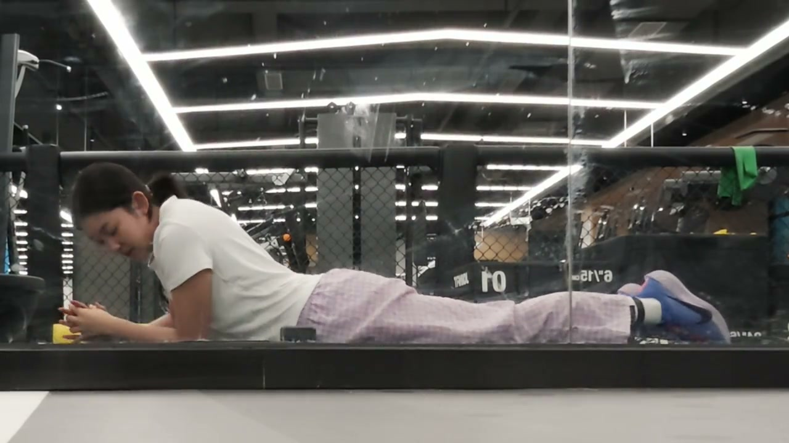
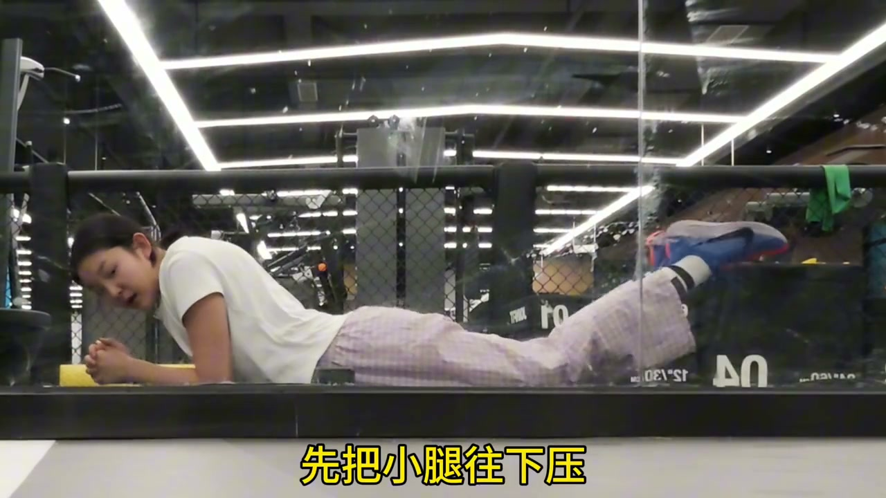
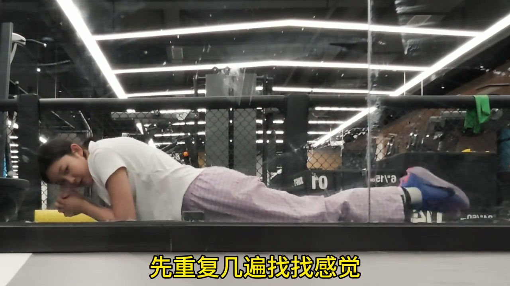
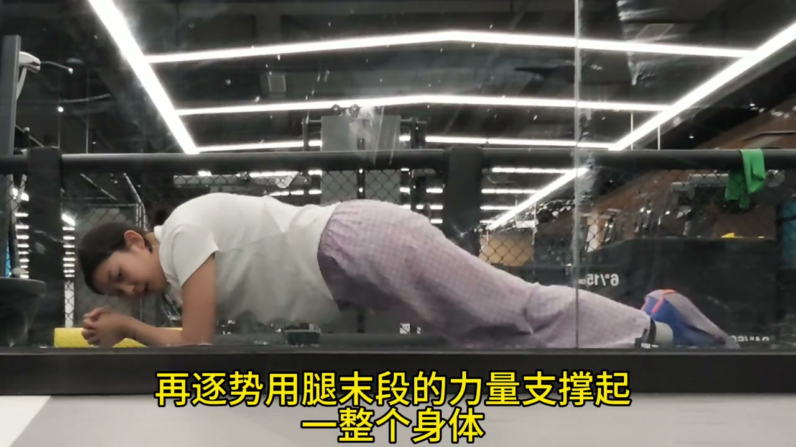
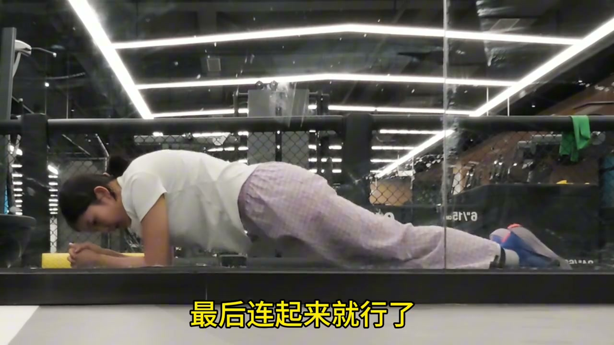

第一步：小腿下压，上身顺势上抬
00:00今天教你蝶泳腿，Ready?
00:02先把小腿往下压，顺势将上半身上抬——关键在于“顺势”，用小腿下压带起身体，形成第一个波浪。先重复几遍找找感觉。

第二步：用腿末段力量撑起全身
00:08再逐步用腿末段的力量支撑起整个身体——力量集中在脚踝、脚背的“鞭打”感，不是大腿主动发力。
00:13最后连起来就行了：两步连贯成完整的海豚打腿，身体呈波浪形起伏。


连起来：完整海豚腿
00:13完整动作循环：小腿下压 → 上身抬起 → 腿末段鞭打 → 波浪传递到全身，节奏是连续弹性的。
00:14学废了吗？——博主用轻松口吻收尾，鼓励下水反复练习。


蝶泳腿的精髓：小腿下压带出波浪，腿末段（脚踝）发力撑起全身，连起来就是海豚腿。